- Количественно оценить степень взаимосвязи между несколькими наборами данных.
- Протестировать гипотезу о наличии в данных некоторого специфического паттерна, используя метод модельных матриц.
- Найти оптимальное сочетание признаков, не вошедших в ординацию, которые “объясняют” характер взаиморасположения точек на ординации.
Вы сможете
Ординация растительности на пастбищах северных оленей
Данные из работы
Väre, H., Ohtonen, R. and Oksanen, J. (1995)

из Väre, Ohtonen & Oksanen (1995)
library(vegan) library(ggplot2) data(varespec) data(varechem)
Два набора данных:
varespec— Описание растительности (обилия отдельных видов);varechem— Параметры среды на участках (Концентрации веществ).
Задание
- Используя средства пакета “ggplot2”, постройте ординацию описаний растительности в осях MDS.
- Раскрасьте точки в соответствии с концентрацией Al.
- На диаграмме приведите величину стресса для данной ординации
Hint. В качестве меры различия используйте коэффициент Брея-Куртиса.
Решение
veg_ord <- metaMDS(varespec, trace = FALSE) veg_MDS <- as.data.frame(veg_ord$points)
library(ggplot2)
Pl_mds <-
ggplot(veg_MDS, aes(x = MDS1, y = MDS2,
fill = varechem$Al)) +
geom_point(shape=21, size =4)+
ggtitle(paste("Stress = ",
round(veg_ord$stress, 2))) +
theme_bw() +
theme(legend.position = "bottom") +
labs(fill = "Aluminium concentration") +
scale_fill_gradient(high = "red",
low = "yellow")
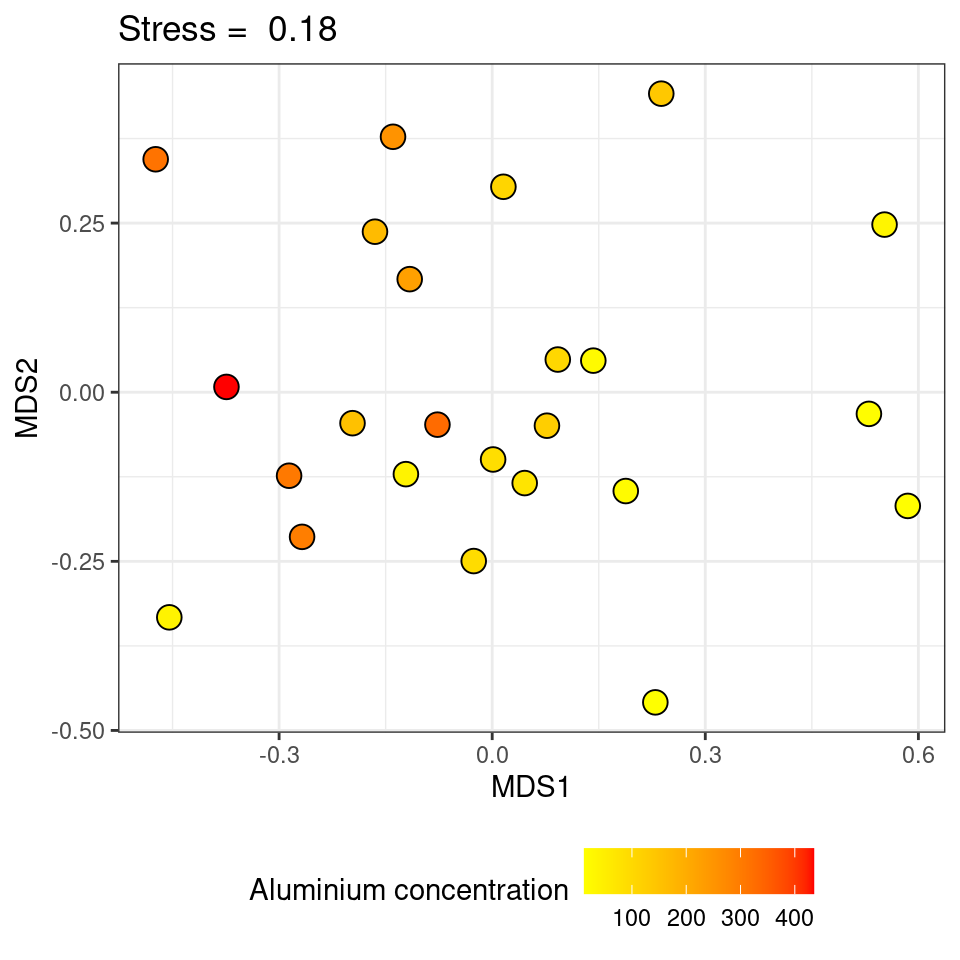
Анализ связи с переменными c помощью функции envfit()
Задание: Постройте рисунок, который будет отражать связь полученной ординации с изученными переменными среды (датасет varechem).
Решение
env_fit <- envfit(veg_ord ~ ., data = varechem)
ordiplot(veg_ord, display = "site") plot(env_fit)
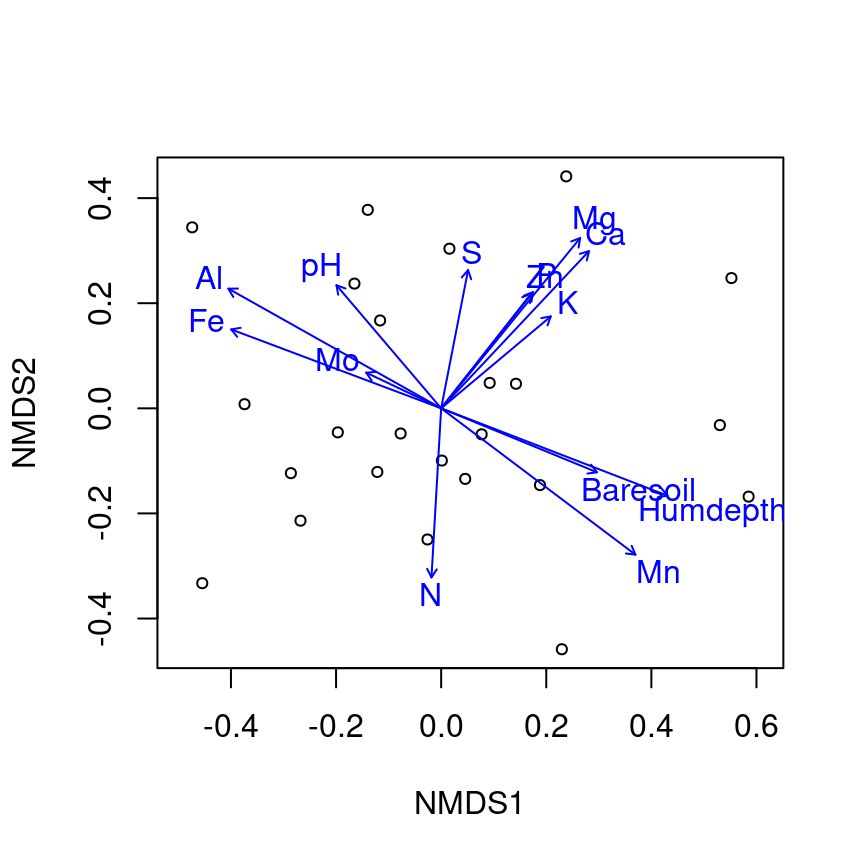
Анализ связи с переменными c помощью функции ordisurf()
Задание: Постройте рисунок, который будет отражать связь полученной ординации с концентрацией Mn и Al.
Решение
env_fit2 <- envfit(veg_ord ~ Al + Mn, data = varechem) plot(veg_ord, display = "site") plot(env_fit2, col = "red") ordisurf(veg_ord, varechem$Al, add = TRUE, col="blue") ordisurf(veg_ord, varechem$Mn, add = TRUE, col="green")
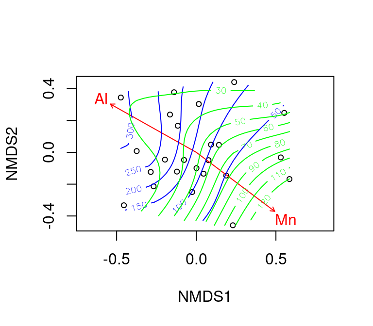
Вопрос:
Сможем ли мы на основе данных, полученных с помощью функций envfit() или ordisurf(), построить оптимальную модель, описывающую связь структуры сообществ и параметров среды?
Оценка связи между данными
Можно оценивать отношения между:
- исходными данными (следующие лекции);
- матрицами попарных расстояний между объектами в исходных данных (текущая лекция!).
Тест Мантела
Постановка проблемы
Нам необходимо оценить связаны ли два набора данных и оценить силу этой связи.
Похожие задачи:
Зависит ли растительность от параметров среды?
Связаны ли морфологические признаки и экспрессия генов?
Связаны ли характеристики паразитов и хозяев?
и т.п.
Метод сравнения сопряженных матриц, описывающих попарные расстояния (или сходства), был предложен Натаном Мантелом
Корреляция матриц сходства/различия
Если две матрицы сопряжены, то меры сходства/различия в одной матрице должны быть подобны мерам сходства/различия в другой матрице.
dist_com <- vegdist(varespec, method = "bray") dist_chem <- vegdist(varechem, method = "euclidean")
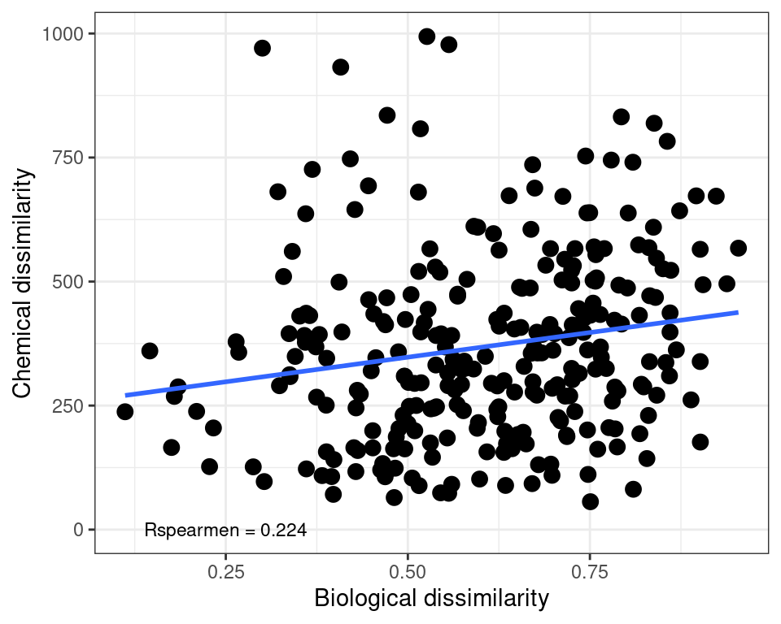
Корреляция матриц сходства/различия
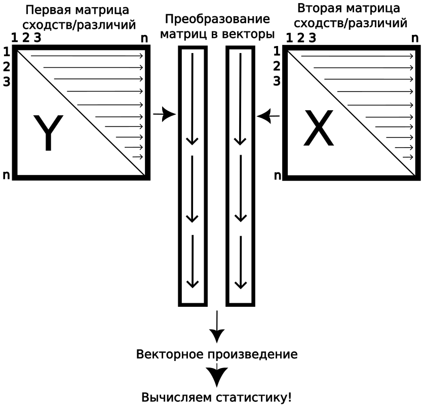
из Legendre, Legendre (2012)
Вопрос: Как можно определить статистическую значимость полученного коэффициента корреляции?
- Внимание! Значимость этой корреляции нельзя оценивать как для обычной корреляции, например функцией
cor.test()или по таблице пороговых значений коэффициента корреляции.
Пермутационные методы оценки статистической значимости
– Друг мой, – отвечал Диоталлеви, – ты никогда ничего не поймешь. Да, это правда, что Тора – я имею в виду, разумеется, видимую Тору – есть лишь одна из перестановок-пермутаций букв, составляющих вековечную Тору, какою создал ее Творец и какой ее дал Адаму. Умберто Эко
“Маятник Фуко”
Тестирование простейшей гипотезы
Создадим две выборки из популяций с нормальным распределением признака, с заведомо отличающимися средними значениями.
set.seed(12345) male <- rnorm(100, 130, 5) female <- rnorm(100, 129,5)
Частотное распределение этих двух выборок выглядит так:
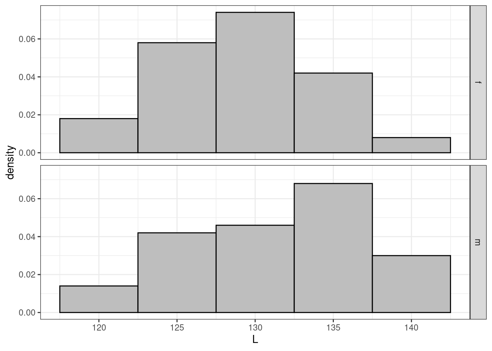
Сравним две выборки с помощью t-критерия Стьюдента
Какая статистика используется в t-критерии?
- \(t= \frac {X1-X2} {SE}\)
Сравним две выборки с помощью t-критерия Стьюдента
Результаты
t <- t.test(male, female) t
## ## Welch Two Sample t-test ## ## data: male and female ## t = 3, df = 196, p-value = 0.009 ## alternative hypothesis: true difference in means is not equal to 0 ## 95 percent confidence interval: ## 0.516 3.484 ## sample estimates: ## mean of x mean of y ## 131 129
Что означает выражение p-value = 0.009?
Пермутационный подход к тестированию
Если две сравниваемые выборки взяты из одной совокупности (справедлива \(H_0\)), то обмен элементами между ними ничего не изменит. Степень различия между выборками (значение статистики) останется более или менее тем же самым.
Пермутации — это перестановки.
Полное количество пермутаций (при равном количестве объектов в двух группах) будет вычисляться по следующей формуле:
\[K= \frac{(2n)!}{(2!(n!)^2)}\]
При большом объеме выборок это огромное число!
В таких случаях используют метод Монте-Карло.
Пермутационный метод вручную
Применим этот метод (на очень примитивном уровне) к нашим двум выборкам, описывающим размеры мальчиков и девочек (векторы male и female).
head (male)
## [1] 133 134 129 128 133 121
head (female)
## [1] 130 123 131 122 130 126
Пермутационный метод вручную
Введем статистику:
\[t= \frac {X_1 - X_2}{ \sqrt {SE_1^2+SE_2^2}}\]
Вычислим значение этой статистики при сравнении векторов male и female:
SE_m <- sd(male) / sqrt(length(male)) SE_f <- sd(female) / sqrt(length(female)) t_initial <- (mean(male) - mean(female))/sqrt(SE_m^2 + SE_f^2)
Полученное значение t = 2.657.
Пермутационный метод вручную
При пермутациях мы должны поменять местами, например, male[10] = 125.403 и female[20] = 128.655. А еще лучше поменять случайное количество элементов одной выборки на случайное количество элементов из другой выборки.
f <- female m <- male num_perm <- sample(1:100, 1) order_m <- sample(1:100, num_perm) order_f <- sample(1:100, num_perm) f[order_f] <- male[order_f] m[order_m] <- female[order_f] SE_m <- sd(m) / sqrt(length(m)) SE_f <- sd(f) / sqrt(length(f)) t_p <- (mean(m) - mean(f)) / sqrt(SE_m^2 + SE_f^2)
После этой пермутации у нас получилось значение \(t_{perm}\) = -2.332, а исходное значение было t = 2.657.
Пермутационный метод вручную
Теперь нужно провести процедуру пермутации много раз и получить распределение значений статистики \(t_{perm}\).
Nperm = 10000
tperm <- rep(NA, Nperm)
set.seed(12345)
for (i in 1:(Nperm-1))
{
BOX <- c(male ,female)
ord <- sample(1:200, 200)
f <- BOX[ord[1:100]]
m <- BOX[ord[101:200]]
SE_m <- sd(m) / sqrt(length(m))
SE_f <- sd(f) / sqrt(length(f))
tperm[i]=(mean(m) - mean(f))/sqrt(SE_m^2 + SE_f^2)
}
head(tperm)
## [1] -0.508 -0.420 -2.240 -0.781 0.901 -1.152
Пермутационный метод вручную
Посмотрим в конец этого вектора.
tail(tperm)
## [1] -0.4985 1.6344 -0.7864 -0.0249 1.0292 NA
Последнее 10000-е значение не заполнено!
В него надо вписать исходное, полученное до пермутаций, значение t = 2.657. Это необходимо, так как мы тестируем гипотезу о принадлежности этого значения случайному распределению.
tperm [Nperm] <- t_initial
Пермутационный метод вручную
Построим частотное распределение пермутированных значений статистики \(t_{perm}\).
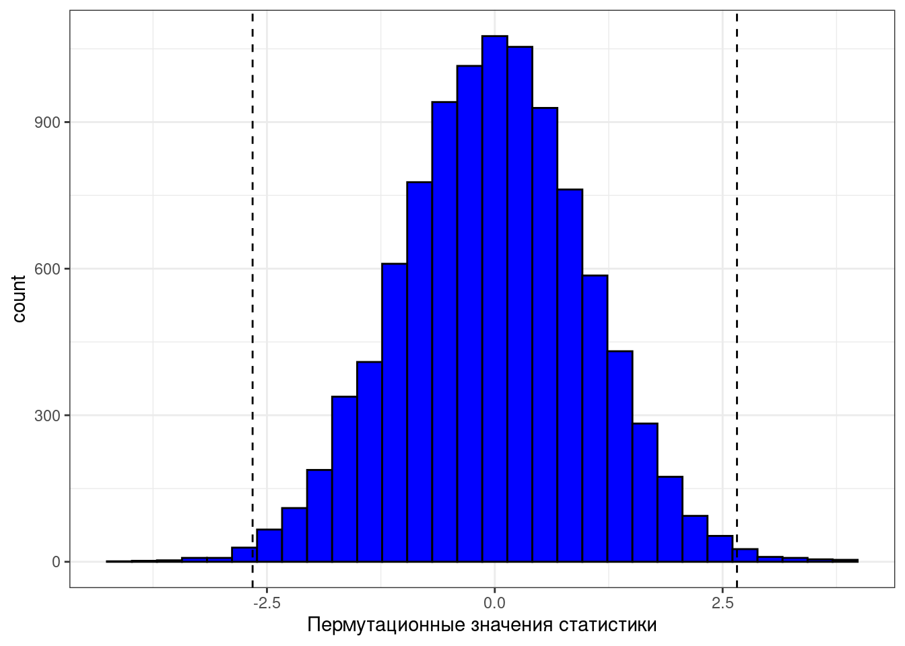
Пермутационный метод вручную
Рассчитаем величину уровня значимости \(p_{perm}= \frac{N_{t_{perm}>=t}}{N_{perm}}\):
p_perm <- length(tperm[tperm >= t_initial] | tperm[tperm
<= -t_initial]) / Nperm
Мы получили уровень значимости \(p_{perm}\) = 0.005.
Сравним его с уровнем значимости, вычисленным с помощью параметрического t-критерия p = 0.009.
Они оба близки и оба выявляют значимые различия!
Пермутационная оценка коэффициента корреляции
Создадим два скоррелированных вектора.
library(MASS) set.seed(1234567) mu <- c(10, 20) #Вектор средних значений Sigma <- matrix(.7, nrow=2, ncol=2) #Ковариационная матрица diag(Sigma) <- c(1, 3) dat <- as.data.frame(mvrnorm(n=100, mu=mu, Sigma=Sigma)) # Датафрейм с двумя скоррелированными переменными cor.test(dat$V1, dat$V2, method = "spearman")
## ## Spearman's rank correlation rho ## ## data: dat$V1 and dat$V2 ## S = 87860, p-value = 0.0000009 ## alternative hypothesis: true rho is not equal to 0 ## sample estimates: ## rho ## 0.473
Пермутационная оценка коэффициента корреляции
library(coin)
spearman_test(V1 ~ V2, data = dat,
distribution = approximate(nresample=9999))
## ## Approximative Spearman Correlation Test ## ## data: V1 by V2 ## Z = 5, p-value <0.0001 ## alternative hypothesis: true rho is not equal to 0
Проверка статистической значимости Мантеловской корреляции
Для оценки достоверности Мантеловской корреляции применяется пермутационная процедура. Эта процедура реализована в функции mantel() из пакета vegan.
Возвращаемся к данным с начала лекции: описание растительности и параметров среды (их матрицы сходства/различия).
options(digits=4) mant <- mantel(dist_com, dist_chem, method="pearson", permutations = 9999) mant
## ## Mantel statistic based on Pearson's product-moment correlation ## ## Call: ## mantel(xdis = dist_com, ydis = dist_chem, method = "pearson", permutations = 9999) ## ## Mantel statistic r: 0.182 ## Significance: 0.023 ## ## Upper quantiles of permutations (null model): ## 90% 95% 97.5% 99% ## 0.113 0.144 0.179 0.214 ## Permutation: free ## Number of permutations: 9999
Вероятность наблюдать такое значение при условии, что верна \(H_0\), равна 0.0231.
Частная Мантеловская корреляция
из Väre, Ohtonen & Oksanen (1995)
В материале есть одна проблема
- Cходство между отдельными описаниями может быть обусловлено не только их биологическими свойствами, но и тем, что они просто располагаются ближе друг к другу в пространстве.
- Корреляция между биологическими признаками и химическими должна оцениваться при учете еще одной матрицы — Матрицы географических расстояний.
Частная Мантеловская корреляция
mantel_partial <- mantel.partial(xdis = dist_com, ydis = dist_chem,
zdis = dist_geo, method = "pearson",
permutations = 9999)
mantel_partial
## ## Partial Mantel statistic based on Pearson's product-moment correlation ## ## Call: ## mantel.partial(xdis = dist_com, ydis = dist_chem, zdis = dist_geo, method = "pearson", permutations = 9999) ## ## Mantel statistic r: 0.182 ## Significance: 0.019 ## ## Upper quantiles of permutations (null model): ## 90% 95% 97.5% 99% ## 0.109 0.143 0.173 0.207 ## Permutation: free ## Number of permutations: 9999
Частная Мантеловская корреляция
## ## Mantel statistic based on Pearson's product-moment correlation ## ## Call: ## mantel(xdis = dist_com, ydis = dist_chem, method = "pearson", permutations = 9999) ## ## Mantel statistic r: 0.182 ## Significance: 0.023 ## ## Upper quantiles of permutations (null model): ## 90% 95% 97.5% 99% ## 0.113 0.144 0.179 0.214 ## Permutation: free ## Number of permutations: 9999
## ## Partial Mantel statistic based on Pearson's product-moment correlation ## ## Call: ## mantel.partial(xdis = dist_com, ydis = dist_chem, zdis = dist_geo, method = "pearson", permutations = 9999) ## ## Mantel statistic r: 0.182 ## Significance: 0.019 ## ## Upper quantiles of permutations (null model): ## 90% 95% 97.5% 99% ## 0.109 0.143 0.173 0.207 ## Permutation: free ## Number of permutations: 9999
Подбор оптимальной модели: процедура BIO-ENV
Постановка задачи
Необходимо выбрать предикторы, которые наилучшим образом объясняют поведение биологической системы.
\(NB!\) Эта задача аналогична задачам, ставящимся в регрессионном анализе.
К. Кларком и M. Эйнсвортом был предложен метод BIO-ENV (Clarke, Ainsworth, 1993). Это непараметрический аналог пошагового регрессионного анализа.
Процедура BIO-ENV
В этом анализе есть две сцепленные матрицы:
- Зависимая матрица (BIO) - матрица геоботанических описаний.
- Матрица-предиктор (ENV) - матрица химических параметров.
Алгоритм процедуры BIO-ENV
- Расчёт матрицы взаимных расстояний между объектами для зависимой матрицы \(D_{BIO}\) (с помощью vegdist). Используются все переменные.
- Вычисление всех возможных матриц взаимных расстояний между объектами для всех возможных комбинаций признаков матрицы ENV — \(D_{ENV_i}\). ВНИМАНИЕ! В результате матриц будет \(2^p-1\), т.к. матрица-предиктор имеет \(p\) переменных.
- Расчёт мантеловской корреляции между каждой из матриц \(D_{ENV_i}\) (предиктор) и матрицей \(D_{BIO}\) (описания).
- Находится матрица \(D_{ENV_i}\), имеющая максимальное значение мантеловской корреляции.
- Вывод признаков матрицы ENV, на основе которых получена максимально подобная матрица \(D_{ENV_i}\).
Функция bioenv() из пакета vegan
BioEnv <- bioenv(varespec, varechem, method = "spearman", index = "bray")
BioEnv
## ## Call: ## bioenv(comm = varespec, env = varechem, method = "spearman", index = "bray") ## ## Subset of environmental variables with best correlation to community data. ## ## Correlations: spearman ## Dissimilarities: bray ## Metric: euclidean ## ## Best model has 5 parameters (max. 14 allowed): ## N P Al Mn Baresoil ## with correlation 0.4494
Оценка достоверности результатов
Внимание! Не надо оценивать достоверность результата процедуры BIO-ENV путем оценки достоверности мантеловской корреляции между \(D_{BIO}\) и матрицей, полученной в результате применения BIO-ENV \(D_{ENV}\). Это будет жульничеством, так как это уже максимально подобная матрица.
Для оценки достоверности полученного результата применяется пермутационный метод, основанный на многократном повторении самой процедуры BIO-ENV.
Внимание! Это занимает очень много времени.
Алгоритм оценки достоверности применения процедуры BIO-ENV
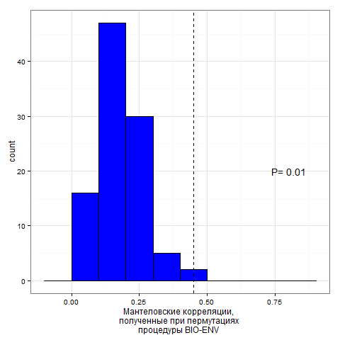
- Применяем процедуру BIO-ENV и находим лучшее сочетание переменных в матрице-предикторе (ENV).
- Пермутируем зависимую матрицу (BIO).
- Применяем процедуру BIO-ENV к пермутированной матрице и вновь находим наилучшее сочетание, сохраняем значение Мантеловской корреляции.
- Повторяем шаги 2 и 3 многократно, получаем распределение пермутационных статистик.
- Вычисляем уровень значимости способом, принятым при пермутационной оценке.
Трактовка результатов BIO-ENV?
Задание: Постройте ординацию описаний в осях nMDS и отразите на этой диаграмме векторы, соответствующие результатам процедуры BIO-ENV.
Решение
plot(veg_ord, display = "site") plot(envfit(veg_ord ~ N + P + Al + Mn + Baresoil, data = varechem))
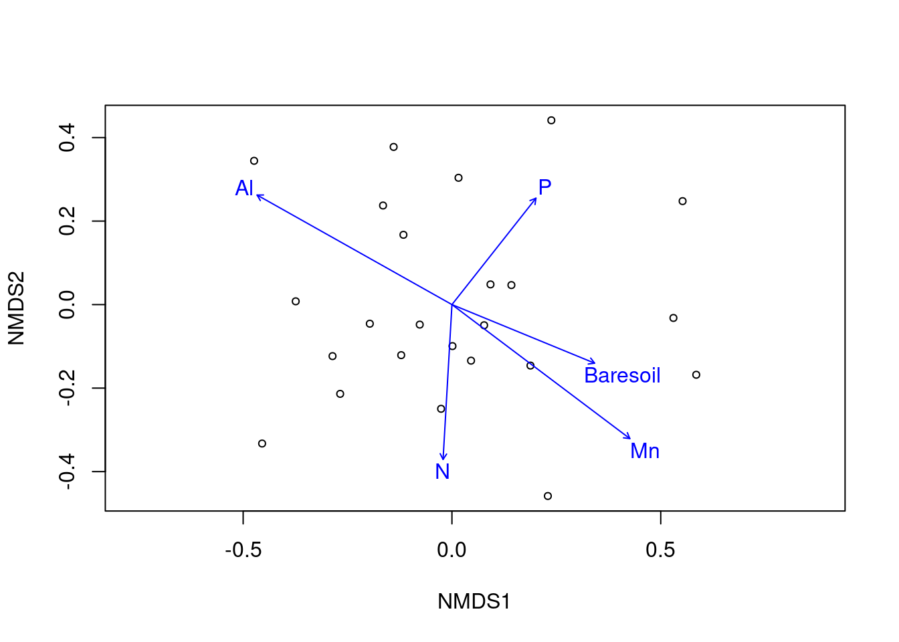
Тестирование гипотезы о соответствии ожидаемому паттерну: метод модельных матриц
Пример: Динамика сообществ мидиевых банок
Существуют ли направленные многолетние изменения в размерной структуре поселений мидий и в структуре сообщества (Khaitov, 2013)?
com <- read.csv("data/mussel_beds.csv",
sep=';', header = T)
ascam <- read.csv("data/ASCAM.csv",
sep=';', header = T)
com — усредненные данные по обилию 12 видов для 3 мидиевых банок (Vor2, Vor4, Vor5).
ascam — (averaged size class abundance matrix) средние плотности поселения мидий разных размеров (6] размерных классов).
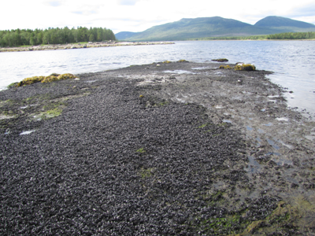
Задание
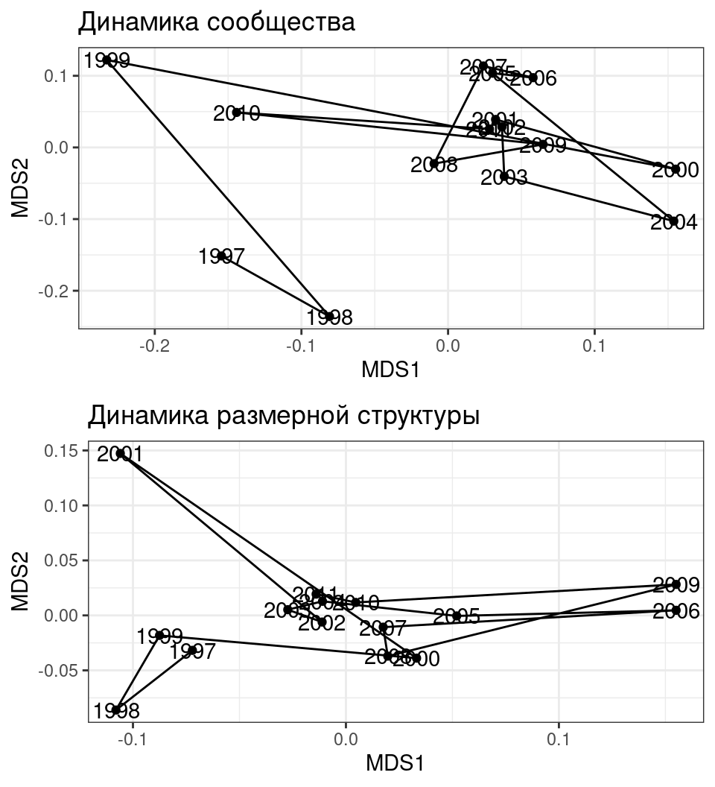
Рассмотрите многолетние изменения структуры сообщества и размерной структуры мидий на мидиевой банке Vor2.
Постройте рисунок, аналогичный приведенному на данном слайде.
Hint 1. Прологарифмируйте данные.
Hint 2. Примените наиболее подходящий коэффициент для оценки различий между объектами.
Решение
Ординация
library(vegan)
log_com <- decostand(com[,-c(1:3)], method = "log")
vor2_log_com <- log_com[com$Bank == "Vor2",]
log_ascam <- decostand(ascam[, -c(1:2)], method = "log")
mds_vor2_com <- as.data.frame(metaMDS(vor2_log_com)$points)
vor2_log_ascam <- log_ascam[ascam$Bank == "Vor2",]
mds_vor2_ascam <- as.data.frame(metaMDS(vor2_log_ascam,
distance = "euclid")$points)
Решение
График ординации
library(ggplot2)
library(gridExtra)
theme_set(theme_bw())
Pl1 <- ggplot(mds_vor2_com, aes(x=MDS1, y=MDS2)) + geom_point() +
geom_path() + geom_text(label = com$Year[com$Bank == "Vor2"]) +
ggtitle("Динамика сообщества")
Pl2 <- ggplot(mds_vor2_ascam, aes(x=MDS1, y=MDS2)) + geom_point() +
geom_path() + geom_text(label = com$Year[com$Bank == "Vor2"]) +
ggtitle("Динамика размерной структуры")
grid.arrange(Pl1, Pl2)
Градиентная модельная матрица
Это матрица Евклидовых расстояний между временными точками.
gradient_model <- vegdist(com$Year[com$Bank == "Vor2"], method="euclidian") gradient_model
## 1 2 3 4 5 6 7 8 9 10 11 12 13 14 ## 2 1 ## 3 2 1 ## 4 3 2 1 ## 5 4 3 2 1 ## 6 5 4 3 2 1 ## 7 6 5 4 3 2 1 ## 8 7 6 5 4 3 2 1 ## 9 8 7 6 5 4 3 2 1 ## 10 9 8 7 6 5 4 3 2 1 ## 11 10 9 8 7 6 5 4 3 2 1 ## 12 11 10 9 8 7 6 5 4 3 2 1 ## 13 12 11 10 9 8 7 6 5 4 3 2 1 ## 14 13 12 11 10 9 8 7 6 5 4 3 2 1 ## 15 14 13 12 11 10 9 8 7 6 5 4 3 2 1
Тестируем гипотезу о наличии градиента
Протестируем гипотезу о наличии временного градиента с помощью теста Мантела.
dist_vor2_com <- vegdist(vor2_log_com, method = "bray") dist_vor2_ascam <- vegdist(vor2_log_ascam, method = "euclidean")
1) Наличие градиента в структуре сообщества
mantel(dist_vor2_com, gradient_model)
## ## Mantel statistic based on Pearson's product-moment correlation ## ## Call: ## mantel(xdis = dist_vor2_com, ydis = gradient_model) ## ## Mantel statistic r: 0.264 ## Significance: 0.018 ## ## Upper quantiles of permutations (null model): ## 90% 95% 97.5% 99% ## 0.160 0.212 0.248 0.295 ## Permutation: free ## Number of permutations: 999
Тестируем гипотезу о наличии градиента
2) Наличие градиента в размерной структуре мидий
mantel(dist_vor2_ascam, gradient_model)
## ## Mantel statistic based on Pearson's product-moment correlation ## ## Call: ## mantel(xdis = dist_vor2_ascam, ydis = gradient_model) ## ## Mantel statistic r: 0.516 ## Significance: 0.001 ## ## Upper quantiles of permutations (null model): ## 90% 95% 97.5% 99% ## 0.167 0.215 0.268 0.301 ## Permutation: free ## Number of permutations: 999
Прослеживается ли связь между размерной структурой мидий и структурой сообщества?
Не самое правильное решение
mantel(dist_vor2_com, dist_vor2_ascam)
## ## Mantel statistic based on Pearson's product-moment correlation ## ## Call: ## mantel(xdis = dist_vor2_com, ydis = dist_vor2_ascam) ## ## Mantel statistic r: 0.521 ## Significance: 0.01 ## ## Upper quantiles of permutations (null model): ## 90% 95% 97.5% 99% ## 0.280 0.373 0.452 0.517 ## Permutation: free ## Number of permutations: 999
Прослеживается ли связь между размерной структурой мидий и структурой сообщества?
Более корректное решение
mantel.partial(dist_vor2_com, dist_vor2_ascam, gradient_model)
## ## Partial Mantel statistic based on Pearson's product-moment correlation ## ## Call: ## mantel.partial(xdis = dist_vor2_com, ydis = dist_vor2_ascam, zdis = gradient_model) ## ## Mantel statistic r: 0.465 ## Significance: 0.023 ## ## Upper quantiles of permutations (null model): ## 90% 95% 97.5% 99% ## 0.292 0.394 0.444 0.502 ## Permutation: free ## Number of permutations: 999
Могут быть и более сложные модельные матрицы
Проверим, нет ли в динамике размерной структуры мидий на банке Vor2 циклических изменений, которые предсказываются некоторыми моделями динамики плотных поселений (Наумов, 2006; Khaitov, Lentsman, 2016).
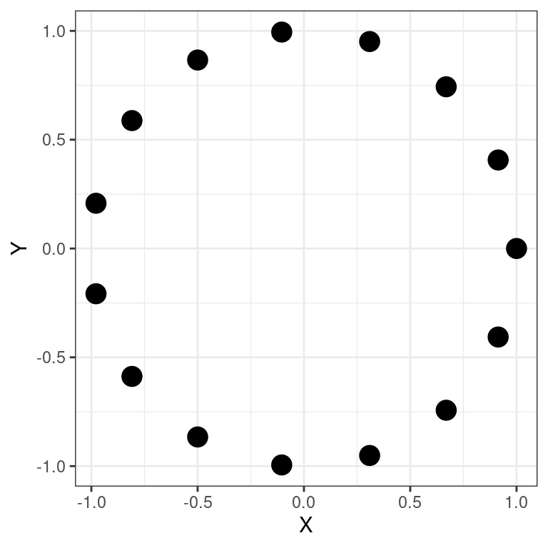
Циклическая модельная матрица.
## 1 2 3 4 5 6 7 8 9 10 11 12 13 14 ## 2 0 ## 3 1 0 ## 4 1 1 0 ## 5 1 1 1 0 ## 6 2 1 1 1 0 ## 7 2 2 1 1 1 0 ## 8 2 2 2 1 1 1 0 ## 9 2 2 2 2 1 1 1 0 ## 10 2 2 2 2 2 1 1 1 0 ## 11 2 2 2 2 2 2 1 1 1 0 ## 12 1 2 2 2 2 2 2 1 1 1 0 ## 13 1 1 2 2 2 2 2 2 1 1 1 0 ## 14 1 1 1 2 2 2 2 2 2 1 1 1 0 ## 15 0 1 1 1 2 2 2 2 2 2 1 1 1 0
Выявляется ли циклическая составляющая в динамике размерной структуры?
mantel(dist_vor2_ascam, cycl_model)
## ## Mantel statistic based on Pearson's product-moment correlation ## ## Call: ## mantel(xdis = dist_vor2_ascam, ydis = cycl_model) ## ## Mantel statistic r: 0.173 ## Significance: 0.005 ## ## Upper quantiles of permutations (null model): ## 90% 95% 97.5% 99% ## 0.0738 0.0996 0.1236 0.1450 ## Permutation: free ## Number of permutations: 999
Циклическая составляющая есть, но…
Более корректная оценка
mantel.partial(dist_vor2_ascam, cycl_model, gradient_model)
## ## Partial Mantel statistic based on Pearson's product-moment correlation ## ## Call: ## mantel.partial(xdis = dist_vor2_ascam, ydis = cycl_model, zdis = gradient_model) ## ## Mantel statistic r: -0.137 ## Significance: 0.94 ## ## Upper quantiles of permutations (null model): ## 90% 95% 97.5% 99% ## 0.127 0.155 0.186 0.215 ## Permutation: free ## Number of permutations: 999
Мы не можем говорить о наличии столь длительного цикла. При данной длине временного ряда нельзя отличить цикл с большим периодом от направленного изменения. Можно обсуждать только циклы с периодом не более половины длины временного ряда.
ANOSIM и SIMPER
Вы сможете
- Протестировать гипотезу о различиях между дискретными группами многомерных данных с помощью теста ANOSIM.
- Выявить переменные, вносящие наибольший вклад в формирование различий между группами, применив процедуру SIMPER.
Вспомним основы
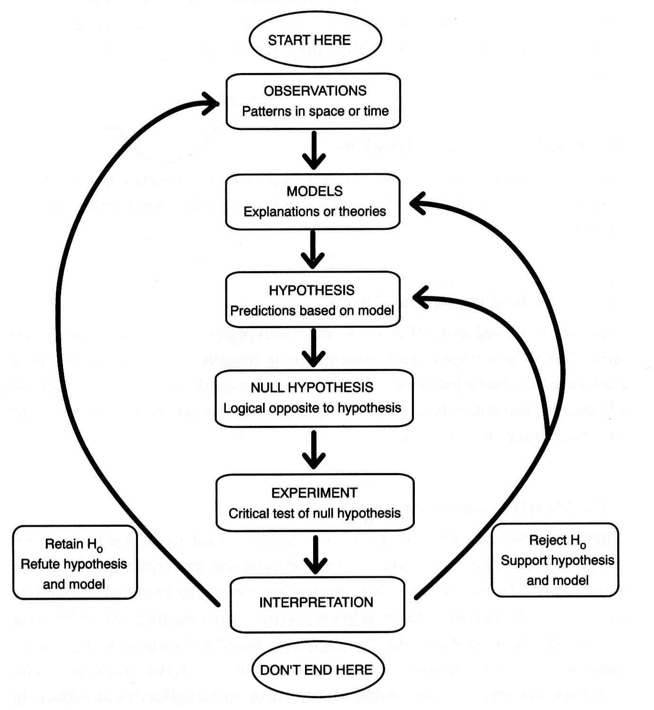
Этапы работы с гипотезами (из Underwood, 1997):
Формулировка биологической гипотезы;
Численное выражение биологической гипотезы (\(H\));
Формулировка альтернативной гипотезы (\(H_0\) — нулевой гипотезы);
Тестирование нулевой гипотезы.
Если \(H_0\) ложна, то признаем, что верна \(H\) и, следовательно, биологическую гипотезу можно рассматривать как истинное утверждение.
Если \(H_0\) истинна, то…
ANOSIM: Analysis Of Similarity
ANOSIM
ANOSIM — анализ сходства. Анализ используется для выявления различий в матрицах сходств/различия между группами. Представляет собой специальную форму теста Мантела, впервые был предложен К.Кларком и Р.Грином в 1988 году.
ANOSIM — непараметрический тест, результаты которого можно было бы отразить на ординации nMDS.
Пример: Динамика сообществ мидиевых банок
Существуют ли различия в сообществах мидиевых банок, сформированных старыми и молодыми мидиями (Khaitov, 2013)?
com <- read.csv("data/mussel_beds.csv", sep=';', header = T)
com$Mussel_size <- factor(com$Mussel_size)
ascam <- read.csv("data/ASCAM.csv", sep=';', header = T)
com — усредненные данные по обилию 12 видов для 3 мидиевых банок (Vor2, Vor4, Vor5).ascam — (averaged size class abundance matrix) средние плотности поселения мидий разных размеров (6] размерных классов).
Задание
- Постройте ординацию всех описаний датасета
com(прологарифмированные данные) в осях nMDS на основе матрицы Брея-Куртиса. - Раскрасьте разными цветами точки, относящиеся к двум разным группам: “Large-dominated” и “Small-dominated”.
Решение
library(vegan)
library(ggplot2)
log_com <- log(com[,-c(1:3)] + 1)
ord_log_com <- metaMDS(log_com, distance = "bray", k=2,
autotransform = FALSE, trace = 0)
MDS <- data.frame(ord_log_com$points)
Решение
Обратите внимание, здесь есть две группы расстояний между точками.
ggplot(MDS, aes(x = MDS1, y = MDS2, fill = com$Mussel_size)) +
geom_point(shape = 21, size = 4) +
scale_fill_manual(values = c("red", "blue")) +
labs(fill = "Mussel size structure type") +
ggtitle(paste("Stress = ", round(ord_log_com$stress, 3), sep = " "))
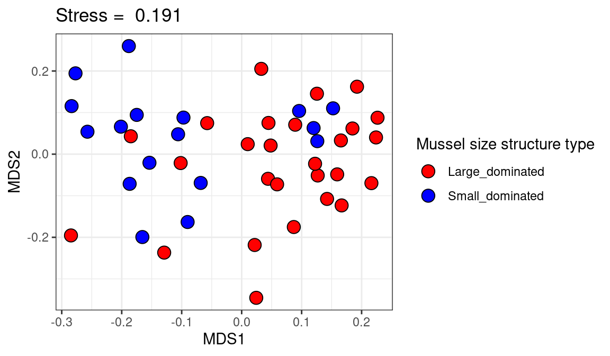
Расстояния между объектами
1. Внутригрупповые расстояния

Within group distance
2. Межгрупповые расстояния

between group distance
Ранги расстояний
Для работы удобно (но не обязательно!) перейти от исходных расстояний между объектами, к их рангам.
Обозначим внутригрупповые расстояния (ранги), как \(r_w\), а межгрупповые, как \(r_b\).
Вычислим
- средние значения внутригрупповых рангов расстояний \(R_w\);
- средние значения межгрупповых рангов расстояний \(R_b\).
R-статистика
На основе полученных значений можно построить статистику (Clarke, 1988, 1993):
\[R_{global} = \frac{R_b-R_w}{n(n-1)/4}\] Эта статистика распределена в интервале -1 < \(R_{global}\) < 1
\(R_{global}\) – оценивает степень разделенности групп в пространстве признаков.
\(R_{global} > 0\) – как минимум есть тенденция к разделению групп.
\(R_{global} \rightarrow 1\) – группы разделяются хорошо.
\(R_{global} \leq 0\) – нет разделения на группы.
Статистическая значимость этой величины оценивается пермутационным методом.
ANOSIM вручную
Ранги расстояний в пространстве признаков
Задание:
- Вычислите матрицу коэффициентов Брея-Куртиса на основе матрицы
log_com. - Разверните полученную матрицу в вектор.
- На основе полученного вектора создайте вектор, содержащий ранги расстояний.
Решение
dist_com <- vegdist(log_com, method = "bray") rank_dist_com <- rank(dist_com)
Внутри- и межгрупповые расстояния
Задание:
- Создайте треугольную матрицу
dummy_dist, той же размерности, что и матрицаdist_com, в которой0будет с стоять в тех ячейках, которые соответствуют межгрупповым расстояниями, а1– внутригрупповым.
Решение
dummy_dist <- dist(as.numeric(factor(com$Mussel_size))) dummy_dist <- ifelse(dummy_dist == 0, 0, 1)
R-статистка
Задание:
- Вычислите средние значения рангов внутри- и межгрупповых расстояний.
- Вычислите R-статистику.
Решение
dists <- data.frame(rank_dist = rank_dist_com,
dummy = as.vector(dummy_dist))
library(dplyr)
mean_dists <- dists %>%
group_by(dummy) %>%
summarize(rank_mean = mean(rank_dist))
n <- nrow(log_com)
R_glob <- (mean_dists$rank_mean[2] - mean_dists$rank_mean[1]) /
(n * (n - 1)/4)
Вопрос: Каков дальнейший ход процедуры
ANOSIM?
Пермутации
Задание:
- Напишите пользовательскую функцию (пусть она будет называться
R_perm), которая пермутировала бы принадлежность каждого объекта к той или иной группе и вычисляла бы значение R-статистики для новой комбинации. - Используя функцию
for()вычислите 10000 значений R-статистики и запишите их в вектор.
Hint. Весь код для пользовательской функции почти такой же, как ранее писали.
Решение
# функция. Весь код почти такой же, как написали ранее.
R_perm <- function(comm, group){
require(vegan)
dist_com <- vegdist(comm)
rank_dist_com <- rank(dist_com)
dummy_dist <- dist(sample(as.numeric(group))) #Перемешиваем группы
dummy_dist <- ifelse(dummy_dist == 0, 0, 1)
dists <- data.frame(rank = rank_dist_com,
dummy = as.vector(dummy_dist))
require(dplyr)
mean_dists <- dists %>% group_by(dummy) %>%
summarize(rank_mean = mean(rank))
n <- nrow(log_com)
R_p <- (mean_dists$rank_mean[2] - mean_dists$rank_mean[1]) /
(n * (n - 1)/4)
R_p
}
R_perms <- rep(NA, 10000)
for(i in 1:9999) R_perms[i] <- R_perm(comm = log_com,
group = com$Mussel_size)
Вопрос: Что надо добавить в вектор R_perms?
Распределение пермутационных оценок R-статистики
Задание:
- Постройте частотную гистограмму, характеризующую распределение пермутационных оценок.
- Нанесите на нее полученное значение \(R_{global}\).
- Вычислите уровень значимости.
Решение
R_perms[10000] <- R_glob Pl_manual <- ggplot(data.frame(R_perms), aes(x = R_perms)) + geom_histogram(binwidth = 0.01) + geom_vline(xintercept = R_glob, linetype = 2) + xlim(-0.4, 0.4) Pl_manual
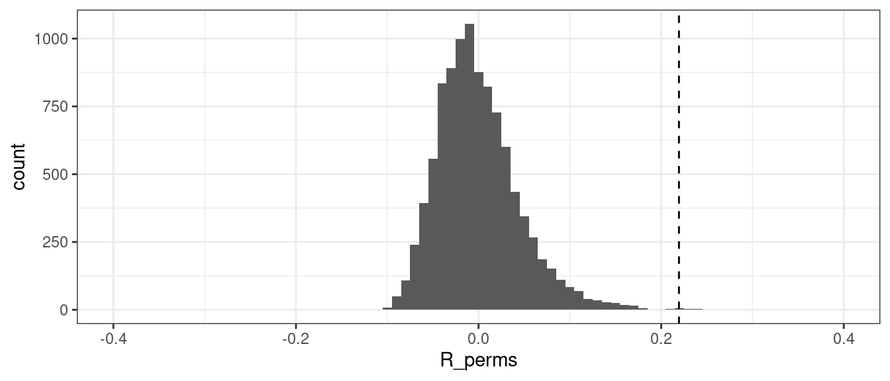
Решение
Вычисляем уровень значимости.
p_level <- mean(R_perms >= R_glob) p_level
## [1] 0.0012
Процедура ANOSIM в пакете vegan
Специализированная функция anosim()
com_anosim <- anosim(log_com,
grouping = com$Mussel_size,
permutations = 9999,
distance = "bray")
Задание
Изучите структуру объекта com_anosim и постройте частотное распределение значений \(R_{global}\), полученных при каждом акте пермутации.
Решение
anosim_perm <- data.frame(perm = com_anosim$perm) anosim_perm[(com_anosim$permutations + 1), 1] <- com_anosim$statistic Pl_prof <- ggplot(anosim_perm, aes(x = perm)) + geom_histogram(binwidth = 0.01, color = "black", fill = "blue") + geom_vline(xintercept = com_anosim$statistic, linetype = 2) + xlim(-0.4, 0.4) Pl_prof
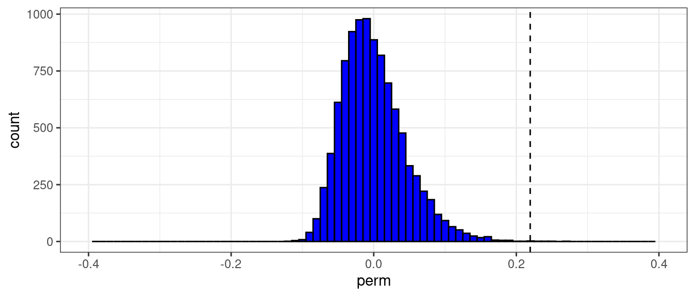
Сравним результаты ручной и автоматической обработки
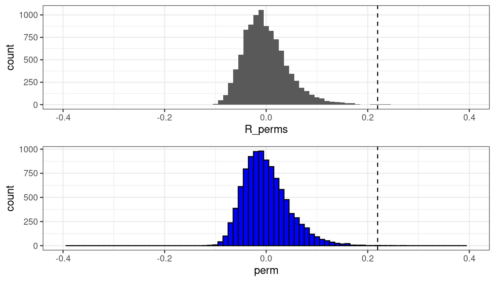
Результаты процедуры ANOSIM
summary(com_anosim)
## ## Call: ## anosim(x = log_com, grouping = com$Mussel_size, permutations = 9999, distance = "bray") ## Dissimilarity: bray ## ## ANOSIM statistic R: 0.219 ## Significance: 0.0006 ## ## Permutation: free ## Number of permutations: 9999 ## ## Upper quantiles of permutations (null model): ## 90% 95% 97.5% 99% ## 0.0597 0.0822 0.1023 0.1304 ## ## Dissimilarity ranks between and within classes: ## 0% 25% 50% 75% 100% N ## Between 1 301.5 549.0 766.5 946 459 ## Large_dominated 4 193.0 360.0 645.0 945 351 ## Small_dominated 3 275.0 478.5 683.2 938 136
Ограничения (Assumptions) для применения ANOSIM
1) Внутригрупповые расстояния (ранги) для разных групп должны иметь приблизительно равные медианы и пределы варьирования.
Для проверки этого допущения надо сравнить распределения внутригрупповых и межгрупповых расстояний (рангов).
Распределение расстояний имеет следующий вид:
plot(com_anosim)
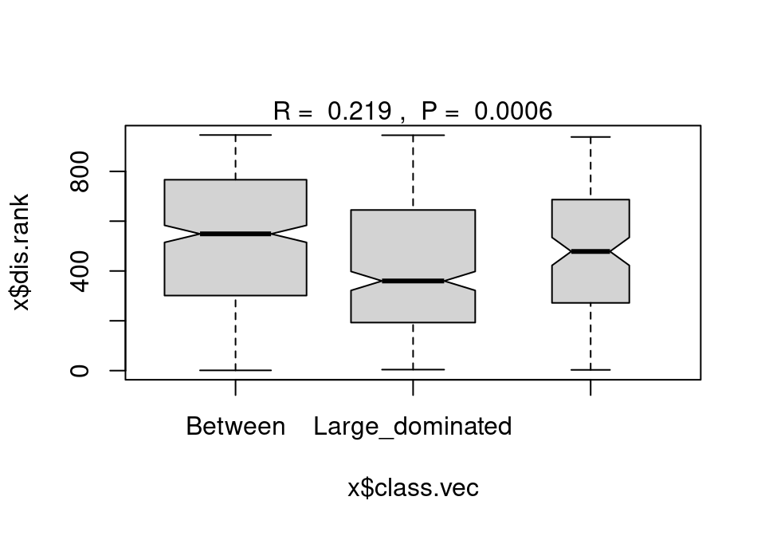
ANOSIM позволяет сравнивать одновременно и несколько групп
НО! Есть одно очень важное ограничение:
2) Попарные сравненения групп можно осуществлять только если было показано, что \(R_{global}\) статистически значимо.
Если это условие выполнено, то можно проводить попарные сравнения.
Пример
Пусть у нас есть три группы объектов: A, B, C.
Можно вычислить \(R_{A vs B}\), \(R_{A vs C}\), \(R_{B vs C}\).
Но при больших объемах выборки даже незначительные различия будут достоверны. Важно обращать внимание не только на оценку статистической значимости, но и на значения R!
Важно! При множественных сравнениях придется вводить поправку Бонферрони.
NB! Для сравнения нескольких групп многомерных объектов, есть более мощное средство — PERMANOVA.
Задание
- Постройте ординацию в осях nMDS, раскрасив точки в разные цвета в зависимости от номера мидиевой банки (переменная Bank);
- Проверьте гипотезу о различиях в структуре сообществ на разных банках;
- Проверьте условия применимости ANOSIM;
- Проведите попарное сравнение всех банок.
Решение
График ординации
ggplot(MDS, aes(x = MDS1, y = MDS2, fill = com$Bank)) +
geom_point(shape = 21, size = 4) +
scale_fill_manual(values = c("red", "blue", "green")) +
labs(fill = "Mussel beds") +
ggtitle(paste("Stress = ", round(ord_log_com$stress, 3),
sep = " "))
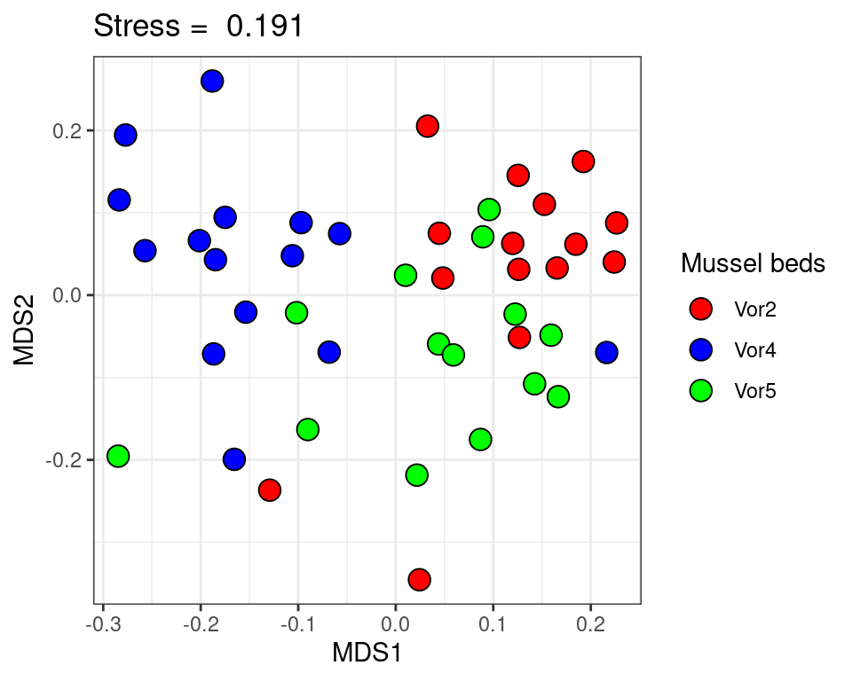
Решение
Проверка гипотезы о различиях в структуре сообществ на разных банках
bed_anosim <- anosim(log_com, grouping = com$Bank,
permutations = 999, distance = "bray")
bed_anosim
## ## Call: ## anosim(x = log_com, grouping = com$Bank, permutations = 999, distance = "bray") ## Dissimilarity: bray ## ## ANOSIM statistic R: 0.44 ## Significance: 0.001 ## ## Permutation: free ## Number of permutations: 999
Решение
Условия применимости
plot(bed_anosim)
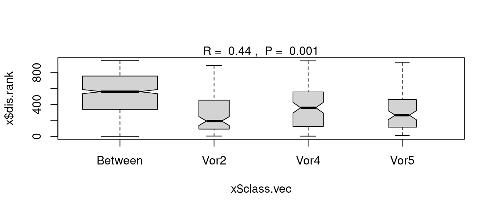
Решение
Попарные сравнения Vor2 vs Vor4
# Vor2 vs Vor4
anosim(log_com[com$Bank %in% c("Vor2", "Vor4"),],
grouping = com$Bank[com$Bank %in% c("Vor2", "Vor4")])
##
## Call:
## anosim(x = log_com[com$Bank %in% c("Vor2", "Vor4"), ], grouping = com$Bank[com$Bank %in% c("Vor2", "Vor4")])
## Dissimilarity: bray
##
## ANOSIM statistic R: 0.588
## Significance: 0.001
##
## Permutation: free
## Number of permutations: 999
Попарные сравнения Vor2 vs Vor5
# Vor2 vs Vor5
anosim(log_com[com$Bank %in% c("Vor2", "Vor5"),],
grouping = com$Bank[com$Bank %in% c("Vor2", "Vor5")])
##
## Call:
## anosim(x = log_com[com$Bank %in% c("Vor2", "Vor5"), ], grouping = com$Bank[com$Bank %in% c("Vor2", "Vor5")])
## Dissimilarity: bray
##
## ANOSIM statistic R: 0.309
## Significance: 0.001
##
## Permutation: free
## Number of permutations: 999
Попарные сравнения Vor4 vs Vor5
# Vor4 vs Vor5
anosim(log_com [com$Bank %in% c("Vor4", "Vor5"),],
grouping = com$Bank[com$Bank %in% c("Vor4", "Vor5")])
##
## Call:
## anosim(x = log_com[com$Bank %in% c("Vor4", "Vor5"), ], grouping = com$Bank[com$Bank %in% c("Vor4", "Vor5")])
## Dissimilarity: bray
##
## ANOSIM statistic R: 0.426
## Significance: 0.001
##
## Permutation: free
## Number of permutations: 999
Проблема малых выборок
Мощность ANOSIM невелика.
При малых выборках пермутационная оценка уровня значимости может не выявить достоверных различий, даже при очень высоком значении R.
SIMPER: Similarity Percentages
SIMPER: анализ процентного сходства
Данный анализ стремится оценить средний процентный вклад отдельных переменных в значения, полученные в матрице расстояний Брея-Куртиса.
Введён Кларком в 1993, несмотря на название исследует скорее различия, чем сходства между объектами.
В результате выдаёт список видов, которые вносят наибольший вклад, для каждой из сравниваемых групп.
Какие признаки зависимой матрицы вносят наибольший вклад в формирование различий между группами?
log_com_simper <- simper(log_com, group = com$Mussel_size,
permutations = 999)
summary(log_com_simper)
## ## Contrast: Large_dominated_Small_dominated ## ## average sd ratio ava avb cumsum p ## Polydora_quadrilobata 0.04190 0.02941 1.42300 0.86000 2.43000 0.18 0.003 ** ## Hydrobia_ulvae 0.02600 0.01812 1.43400 3.26000 2.83000 0.29 0.889 ## Skeneopsis_planorbis 0.02340 0.01722 1.36100 0.38000 1.28000 0.39 0.001 *** ## Fabricia_sabella 0.02230 0.01799 1.24200 0.92000 1.31000 0.48 0.326 ## Cricotopus_vitripennis 0.02100 0.01512 1.38700 1.69000 2.22000 0.57 0.130 ## Onoba_aculeus 0.01880 0.01319 1.42500 1.07000 1.57000 0.65 0.021 * ## Nemertini 0.01720 0.01417 1.21200 2.16000 2.51000 0.72 0.158 ## Macoma_balthica 0.01540 0.01299 1.18900 2.61000 2.68000 0.79 0.643 ## Littorina_saxatilis 0.01540 0.01003 1.53700 2.04000 1.69000 0.85 0.004 ** ## Filamentous_algae 0.01500 0.01145 1.31500 0.83000 0.63000 0.92 0.950 ## Gammarus_sp. 0.01140 0.00892 1.28400 1.77000 1.92000 0.96 0.885 ## Tubificoides_benedeni 0.00820 0.00613 1.33900 4.86000 4.75000 1.00 0.927 ## --- ## Signif. codes: 0 '***' 0.001 '**' 0.01 '*' 0.05 '.' 0.1 ' ' 1 ## Permutation: free ## Number of permutations: 999
Оценка вклада в формирование различий
\[Contr_{ijk} = \frac{|{y_{ij}-y_{ik}}|}{\sum\limits_{i=1}^{S}{(y_{ij}+y_{ik})}}\]
\(y_{i,j}-y_{i,k}\) — разность значений \(i\)-той переменной (вида) в объектах (пробах) \(j\) и \(k\). \(S\) — количество всех видов.
Итоговая статистика вычисляется как сумма вклада каждого отдельного вида:
\[d_{jk} = \sum\limits_{i = 1}^{S}d_{ijk}\]
Результаты SIMPER
\(average\) –– вклад, который признак вносит в различия;
\(ava\) и \(avb\) –– среднее обилие в первой и второй группе, соответственно;
\(sd\) –– стандартное отклонение \(average\);
\(ratio\) — \(average/sd\); отношение вклада к отклонению. Характеризует дискриминирующую силу переменной;
\(cumsum\) –– накопленная степень различий.
Задание
Выявите виды, отвечающие за различия в сообществах разных банок
Решение
summary(simper(log_com, group = com$Bank, permutations = 999))
## ## Contrast: Vor2_Vor4 ## ## average sd ratio ava avb cumsum p ## Polydora_quadrilobata 0.04660 0.02795 1.66800 0.67000 2.80000 0.18 0.001 *** ## Hydrobia_ulvae 0.03250 0.01559 2.08200 3.68000 2.46000 0.30 0.003 ** ## Skeneopsis_planorbis 0.02820 0.01816 1.55300 0.05000 1.46000 0.41 0.001 *** ## Fabricia_sabella 0.02230 0.01699 1.31200 1.55000 1.09000 0.50 0.474 ## Nemertini 0.02100 0.01389 1.51400 1.92000 2.53000 0.58 0.004 ** ## Filamentous_algae 0.01950 0.01314 1.48100 1.19000 0.42000 0.66 0.002 ** ## Onoba_aculeus 0.01840 0.01375 1.34200 0.86000 1.42000 0.73 0.207 ## Littorina_saxatilis 0.01740 0.01013 1.71900 2.18000 1.36000 0.80 0.001 *** ## Cricotopus_vitripennis 0.01700 0.01182 1.44100 2.07000 2.34000 0.86 0.989 ## Macoma_balthica 0.01430 0.01224 1.16500 2.74000 2.77000 0.92 0.823 ## Gammarus_sp. 0.01220 0.00936 1.30200 1.83000 1.99000 0.96 0.387 ## Tubificoides_benedeni 0.00950 0.00664 1.42900 5.03000 4.71000 1.00 0.073 . ## --- ## Signif. codes: 0 '***' 0.001 '**' 0.01 '*' 0.05 '.' 0.1 ' ' 1 ## ## Contrast: Vor2_Vor5 ## ## average sd ratio ava avb cumsum p ## Hydrobia_ulvae 0.02890 0.02376 1.21600 3.68000 3.14000 0.13 0.174 ## Fabricia_sabella 0.02754 0.01847 1.49100 1.55000 0.53000 0.26 0.006 ** ## Polydora_quadrilobata 0.02197 0.02301 0.95500 0.67000 0.89000 0.36 1.000 ## Cricotopus_vitripennis 0.02168 0.01407 1.54100 2.07000 1.22000 0.46 0.198 ## Onoba_aculeus 0.01916 0.01373 1.39600 0.86000 1.52000 0.55 0.096 . ## Filamentous_algae 0.01804 0.01220 1.47900 1.19000 0.63000 0.63 0.027 * ## Macoma_balthica 0.01679 0.01317 1.27400 2.74000 2.38000 0.71 0.251 ## Nemertini 0.01653 0.01208 1.36800 1.92000 2.44000 0.79 0.547 ## Skeneopsis_planorbis 0.01380 0.01094 1.26100 0.05000 0.67000 0.85 0.997 ## Gammarus_sp. 0.01227 0.00893 1.37400 1.83000 1.64000 0.91 0.355 ## Littorina_saxatilis 0.01019 0.00712 1.43000 2.18000 2.20000 0.95 1.000 ## Tubificoides_benedeni 0.01009 0.00690 1.46100 5.03000 4.70000 1.00 0.011 * ## --- ## Signif. codes: 0 '***' 0.001 '**' 0.01 '*' 0.05 '.' 0.1 ' ' 1 ## ## Contrast: Vor4_Vor5 ## ## average sd ratio ava avb cumsum p ## Polydora_quadrilobata 0.04700 0.02844 1.65300 2.80000 0.89000 0.20 0.001 *** ## Cricotopus_vitripennis 0.02800 0.01679 1.66600 2.34000 1.22000 0.31 0.001 *** ## Hydrobia_ulvae 0.02460 0.01588 1.55200 2.46000 3.14000 0.42 0.853 ## Skeneopsis_planorbis 0.02370 0.01545 1.53600 1.46000 0.67000 0.51 0.003 ** ## Fabricia_sabella 0.02010 0.01698 1.18300 1.09000 0.53000 0.60 0.840 ## Littorina_saxatilis 0.01870 0.01087 1.72400 1.36000 2.20000 0.68 0.001 *** ## Onoba_aculeus 0.01640 0.01182 1.38800 1.42000 1.52000 0.74 0.805 ## Macoma_balthica 0.01630 0.01375 1.18400 2.77000 2.38000 0.81 0.387 ## Nemertini 0.01430 0.01378 1.03900 2.53000 2.44000 0.87 0.885 ## Filamentous_algae 0.01230 0.00855 1.43800 0.42000 0.63000 0.92 0.996 ## Gammarus_sp. 0.01150 0.00931 1.23900 1.99000 1.64000 0.97 0.632 ## Tubificoides_benedeni 0.00680 0.00494 1.37000 4.71000 4.70000 1.00 0.997 ## --- ## Signif. codes: 0 '***' 0.001 '**' 0.01 '*' 0.05 '.' 0.1 ' ' 1 ## Permutation: free ## Number of permutations: 999
Summary
- Степень сопряженности двух наборов признаков можно оценивать с помощью теста Мантела.
- Оценка достоверности теста Мантела и корреляций с признаками, вычисленными в процедуре
envfit()проводится пермутационным методом - С помощью процедуры
BIO-ENVможно выявить набор переменных в матрице-предикторе, которые обеспечивают наибольшее сходство с зависимой матрицей. - ANOSIM — простейший вариант сравнения нескольких групп объектов, охарактеризованных по многим признакам.
- С помощью процедуры SIMPER можно оценить вклад отдельных переменных в формирование различий между группами.
Другое программное обеспечение
PRIMER 6.
Здесь реализована расширенная процедура BEST.
Она позволяет проводить не только полный перебор всех переменных в матрице-предикторе (Bio-Env), но и оптимизировать эту процедуру (BVStep). Кроме того, есть возможность оценивать достоверность результатов анализа. Но работает так же медленно.
Что почитать
- Oksanen, J., 2011. Multivariate analysis of ecological communities in R: vegan tutorial. R package version 2–0.
- Clarke, K. R & Ainsworth, M. 1993. A method of linking multivariate community structure to environmental variables. Marine Ecology Progress Series, 92, 205–219.
- Clarke, K. R., Gorley R. N. (2006) PRIMER v6: User Manual/Tutorial. PRIMER-E, Plymouth.
- Legendre P., Legendre L. (2012) Numerical ecology. Second english edition. Elsevier, Amsterdam. (В этом издании приводятся ссылки на реализацию методов в R)